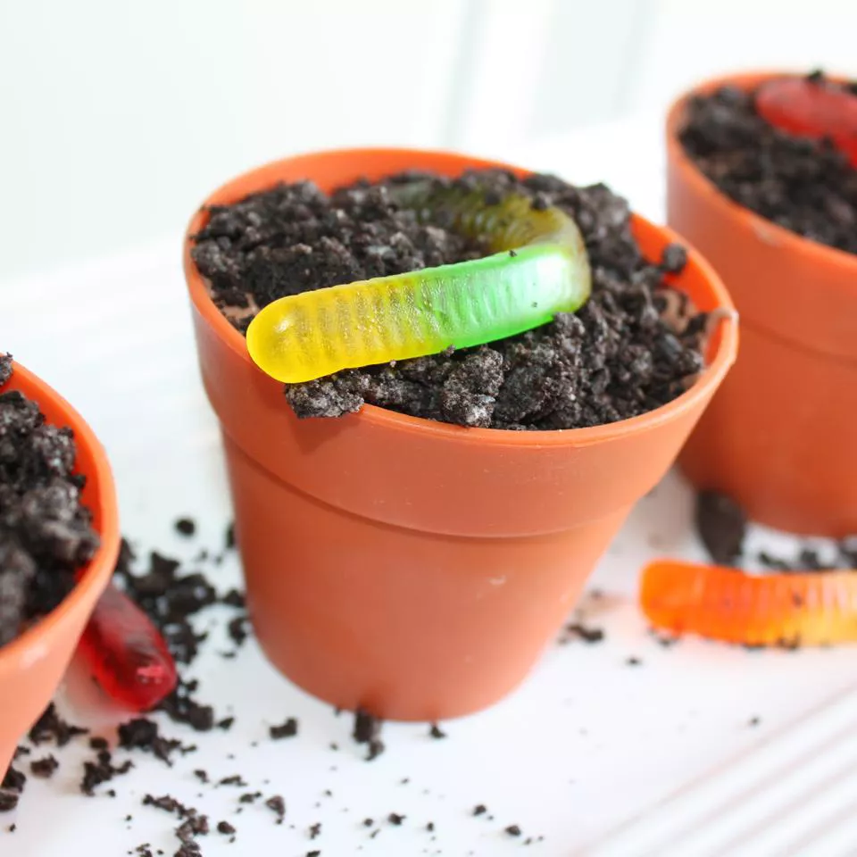

Dirt Cake

Table of Contents
Description
This no-bake treat is simple enough for kids to help create. The real fun lies in decorating it with gummy worms, mellowcreme pumpkins, or even plastic bones.
This dirt cake recipe is a great conversation piece at parties — adults love it as much as children do. Garnish the flower pot cake with gummy worms; display it with a new garden trowel and artificial flowers for the full effect.
Time & Servings
20 minutes & 10 servings.
Ingredients
- 32 ounces chocolate sandwich cookies with creme filling
- 1 (8 ounce) package cream cheese, softened
- ½ cup butter, softened
- ½ cup confectioners' sugar
- 3 ½ cups milk
- 1 (12 ounce) container frozen whipped topping, thawed
- 2 (3.5 ounce) packages instant vanilla pudding mix
Directions
- Finely crush chocolate cookies in a food processor; set crumbs aside.
- Combine cream cheese, butter, and confectioner's sugar in a large bowl; beat with an electric mixer until smooth.
- Whisk milk, whipped topping, and pudding together in a separate large bowl; fold in cream cheese mixture until well combined.
- Alternately layer crushed cookies and pudding mixture in a medium flower pot, starting and ending with cookies. Chill dirt cake in the refrigerator until ready to serve; garnish as desired.
Nutrition Facts (per serving)
- Calories: 827
- Fat: 45g
- Carbs: 102g
- Protein: 10g
DISCLAIMER:
I am in no way the creator of said recipe that is on this page - this is just a fun project. Thank you to Tammy Hooper for the recipe!
For more recipes, please click this link to refer back to the main page that holds all recipes!